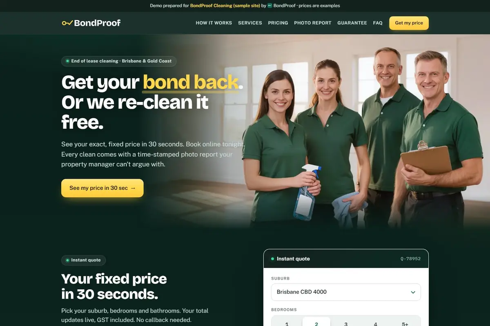

Website design · Bond cleaning · Brisbane & Gold Coast · 2026
Bond Cleaning Website Design for Brisbane and Gold Coast Cleaners
Short answer: a bond cleaning website has one job: let a tenant with a move-out date see a fixed price, book, and trust that the clean will pass the agent's inspection. That means an instant quote, a short booking form, a plainly worded re-clean guarantee and proof of the clean, with your Brisbane and Gold Coast suburbs spelled out. There's a demo build to click through below.
End-of-lease cleaning is a deadline job. The customer is a tenant with a handover date, an agent's exit inspection coming, and a bond they want back. They're comparing a handful of cleaners at once, usually on their phone, usually outside business hours. The cleaner who makes it easiest to get a price and lock in a date tends to be the one who gets the job, and that's the test for any end of lease cleaning website. This guide is the bond cleaning version of the same system I describe in my pressure cleaning website design guide.
Give them a fixed price, fast: the instant quote
When I looked at how Brisbane bond cleaners present pricing, the common patterns were a price grid by bedrooms and bathrooms, or "message us your suburb and property size for a quote". Both work, but both make the tenant wait or do the sums themselves. I didn't come across a live bond cleaning quote calculator among the sites I looked at, which is the gap.
A calculator asks the few things that actually change the price, then shows a total straight away:
- Suburb. Brisbane and Gold Coast travel and access can differ.
- Bedrooms and bathrooms. The main driver of time on site.
- Furnished or empty. Furniture changes how long the clean takes.
- Add-ons. Oven and rangehood, carpet steam cleaning, windows, and so on, whatever you genuinely offer.
You set the prices, because only you know your costs. If you can't offer an instant figure, a clear price grid with "what's included" beside it is the minimum.
Online booking that captures what you need
A bond clean is booked around a move-out date, so the form needs more than a name and a number. Ask for the clean date and the handover or inspection date, the property address and type, how you'll get the keys, and who the property manager is. If you take a deposit, do it at the end of the form, so the price is already agreed before the tenant is asked for money. Keep it to one screen of fields where you can: every extra field is a reason to close the tab and ring the next cleaner.
Put your bond back guarantee in plain words
The listings I looked at lead with a guarantee, so a vague "satisfaction guaranteed" line does little to set you apart. Say what you'll do and when. A clear version reads like: if your agent flags something in their written exit report, we come back and re-clean those items at no charge. Then add the window you'll honour, and make sure it's one you can keep.
Two cautions. Don't promise the bond itself comes back: the agent and landlord decide that, not you. And check the wording against your own terms and insurance before it goes live. This is general information, not legal advice.
Show proof of the clean: a checklist and a photo report
An agent doesn't take your word that the oven is clean, and neither does a nervous tenant. A room-by-room checklist covering kitchen, bathrooms, bedrooms, living areas, windows and extras shows what's done. Before and after photos, time-stamped and sent as a report the property manager can read, show that it's done. Whatever you promise on the site, you need to be doing on the job, so only publish a photo report if your team will take the photos.
Show trust signals, but only the true ones
Insurance, police-checked staff, years in business and the real estate agents you work with are all things tenants and agents look for. List the ones that are true for your business, with your actual details, and leave the rest off. Never copy another cleaner's badges or reviews. If you have genuine Google reviews, link to them rather than retyping them.
Say which Brisbane and Gold Coast suburbs you cover
"Brisbane and Gold Coast" isn't enough for a tenant in Springwood or Burleigh Heads wondering whether you'll travel. List the suburbs you service, and where it makes sense, give the busiest areas their own page with the same quote tool on it. That also gives Google a reason to show you for local searches such as bond cleaning leads in your suburb. For the wider local SEO picture, my local SEO guide for pressure washers covers the Google Business Profile and suburb-page approach, which carries across to cleaning.
See it working: the BondProof demo build
Demo build — fictional business
I built BondProof Cleaning, an end-of-lease cleaning site for Brisbane and the Gold Coast, to show what the pieces above look like together. It isn't a real client and it isn't a real business: its prices are examples, and no real bookings or payments are taken. It stays out of Google's index on purpose.

Things to try when you open it:
- The instant quote. Pick a suburb, bedrooms, bathrooms, furnished or not, and add-ons, and watch the total build.
- The booking form. Clean and move-out dates, property details, key handover and a deposit step. In the demo it only shows a confirmation; nothing is charged.
- The photo report and inspection checklist. How proof of the clean is shown to the tenant and the agent.
- The guarantee. The demo's wording is "If your agent flags it, we fix it. Free." Treat it as example copy: write your own to match what you will actually do.
What a website won't do
- It won't fix a clean that fails inspection. The site gets the booking; your team earns the bond refund and the referral.
- It doesn't replace your Google Business Profile. Most tenants searching on their phone see the map listing first, so set that up properly alongside the site.
- It won't answer the phone for you. Calls will still come in while you're on a job, which is where missed call text back earns its keep.
If you'd like the follow-up behind the form to run itself, my GoHighLevel pricing Australia guide breaks down what that kind of system costs to run each month.
Questions bond cleaners ask about their website
What should a bond cleaning website include?
Six things: a fixed price or instant quote based on bedrooms, bathrooms and add-ons; an online booking form that captures dates and key handover; a clearly worded re-clean guarantee; proof of the clean, such as a checklist and a photo report; trust signals that are true for your business, like insurance and police checks; and the suburbs you cover in Brisbane and the Gold Coast.
Do I need a bond cleaning quote calculator?
You don't need one, but it removes the slowest step. Tenants are working to a move-out date and comparing several cleaners. A calculator that turns suburb, bedrooms, bathrooms and add-ons into a price on the spot means they can book tonight instead of waiting on a callback. If your pricing is simple, a clear price grid is the minimum.
What should a bond back guarantee say?
Say exactly what you will do and when: for example, that you will re-clean the items listed in the agent's written exit report, at no charge, within a time window you can genuinely honour. Don't promise a bond refund, because the agent or landlord makes that call. Check the wording against your own insurance and terms before you publish it.
Is the BondProof Cleaning site a real client?
No. BondProof Cleaning is a demo build of a fictional business, made to show what this kind of site looks like. Its prices are examples, and no real bookings or payments are taken on it.
How much does a bond cleaning website cost?
I haven't published a bond cleaning price. It depends on whether you need the quote calculator, online booking, deposits and suburb pages, so I scope it on a free funnel website audit call rather than guess a number here.
Want a bond cleaning site like the demo?
I build quote-calculator and booking sites for Australian service businesses, with follow-up behind the form. Book a free funnel website audit and we'll go through what your current site is missing and what a bond cleaning build would involve.
Book a Free Funnel Website AuditPaul Isogon · I run this system on my family's pressure cleaning business in Albury–Wodonga. BondProof Cleaning is a demo build of a fictional business, not a client.